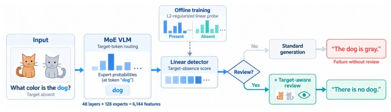
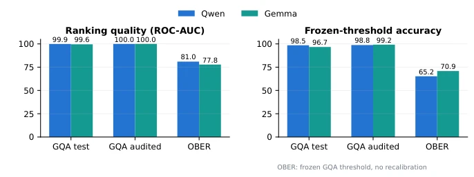
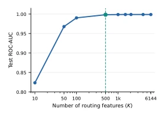
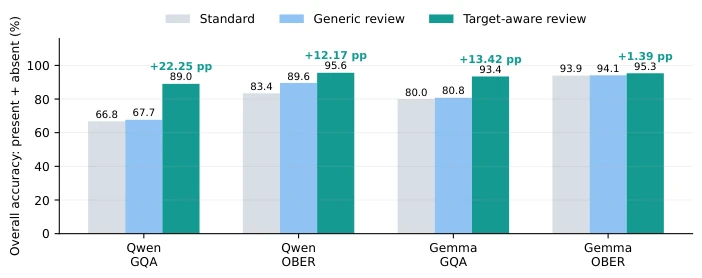
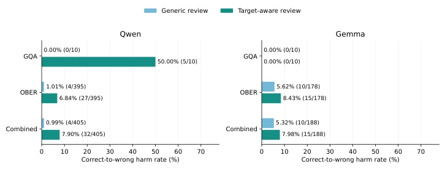
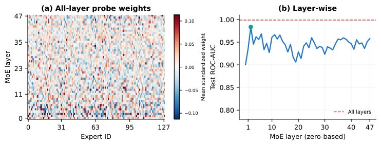
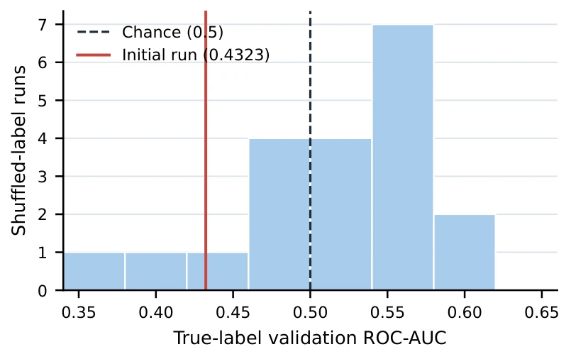
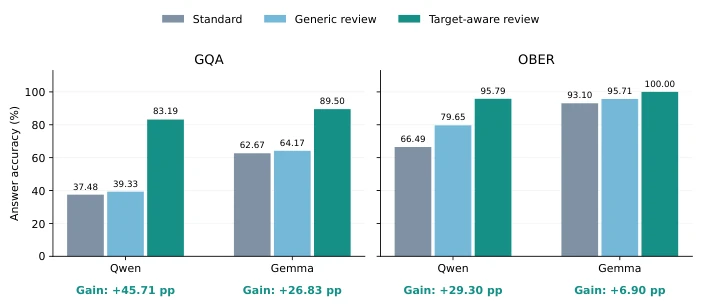

This paper conducts a thorough inspection of the "routing signals" in MoE VLMs, revealing that these experts actually betray themselves early on when "fabricating" responses. Instead of employing fancy external validators, the authors directly mined the routing probabilities within the MoE; training a simple linear probe is sufficient to catch "target absence" in the act. This lightweight intervention, which involves "no modification of model weights", directly boosted accuracy by 20%+ on the GQA and OBER datasets, representing a "free" performance gain. However, this method is somewhat "context-dependent"; threshold migration across datasets requires recalibration, and once a false positive triggers a "review", it may inadvertently "miscorrect" originally correct answers. Overall, this is an elegant operation that directly translates "interpretability" into "actionability". Although it does not solve all hallucination issues, it demonstrates that MoE internal signals are indeed more honest than they appear on the surface.
研究动机Motivation
视觉语言模型（VLM）常犯一种致命错误：当问题预设了一个不存在的物体（如“那只狗是什么颜色？”）时，模型会一本正经地编造答案，而非指出物体缺失。这种现象被称为“目标缺失接地失败”（target-absence grounding failure）。现有检测手段主要依赖生成后的响应置信度、隐藏状态或不确定性度量（Li et al., 2024; Kogilathota et al., 2026），这些方法往往需要额外的计算开销或仅在生成后生效，无法在推理前精准拦截。虽然已有工作通过外部验证器或重新生成来缓解幻觉（Leng et al., 2024; Huang et al., 2024），但对所有输入进行全量复查成本过高。MoE架构中的路由机制本应反映计算分配，但路由信号是否能作为“目标缺失”的早期预警信号，目前尚不明确。本文旨在填补这一空白，利用MoE特有的路由决策，在生成前低成本地检测视觉前提错误，并引导选择性修正。
Vision Language Models (VLMs) frequently commit a fatal error: when a question presupposes a non-existent object (e.g., "What color is that dog?"), the model seriously fabricates an answer rather than pointing out the object's absence. This phenomenon is termed "target-absence grounding failure". Existing detection methods primarily rely on post-generation response confidence, hidden states, or uncertainty metrics (Li et al., 2024; Kogilathota et al., 2026). These methods often incur additional computational overhead or only take effect after generation, failing to intercept precisely before reasoning. Although existing work alleviates hallucinations through external validators or regeneration (Leng et al., 2024; Huang et al., 2024), conducting a full review for all inputs is prohibitively costly. The routing mechanism within the MoE architecture is intended to reflect computation allocation, yet it remains unclear whether routing signals can serve as an early warning signal for "target absence". This paper aims to fill this gap by leveraging MoE-specific routing decisions to detect visual premise errors at low cost prior to generation and guide selective correction.
The overall workflow is divided into three stages: "feature extraction - detection training - gating intervention". First, the system locates the target noun phrase in the question via a rule extractor and maps it to the VLM's token sequence. During the prefill stage of the standard prompt, the system records the routing probability distribution of the target token across all MoE layers, concatenating them into a high-dimensional vector as features. Second, these features are used to train an L2-regularized linear probe, which learns to distinguish the distributional differences between "target present" and "target absent", outputting a missing probability score. Finally, a decision threshold is set to bifurcate the reasoning process: if the score is below the threshold, the model directly generates a standard response; if above the threshold, it triggers a "target-aware review", injecting specific instructions into the model requiring it to explicitly verify the existence of the target. The entire process modifies neither model weights nor routing parameters, relying solely on prompt engineering and external probes. The core innovation of this method lies in converting MoE internal routing probabilities into interpretable visual grounding signals and designing a "detection - trigger - correction" closed-loop strategy, incurring computational costs only on high-risk samples.

Figure 1: Overview of routing-gated visual regrounding. A linear detector is trained offline on target-token routing probabilities collected across MoE layers and experts. At inference time, the detector scores routing from the standard-prompt prefill before answer generation. Predicted-present inputs follow standard decoding, while predicted-absent inputs trigger a target-aware prompt that asks the unchanged VLM to verify the queried object’s presence and explicitly report its absence when unsupported.
Experiments were conducted on two MoE VLMs: Qwen3-VL and Gemma-4. The datasets cover GQA-Inpaint and the external OBER. Baselines include standard response, general review, and full review. Evaluation metrics include ROC-AUC, accuracy, recall, and the "harm rate" induced by false positives. Results indicate that the probe trained solely on routing signals achieved an ROC-AUC as high as 0.9988 on the GQA test set and 0.8095 on OBER, demonstrating the signal's cross-dataset generalization capability. After applying the gating strategy, Qwen's end-to-end accuracy on GQA increased by 22.25 percentage points, while Gemma increased by 13.42 percentage points. Ablation analysis reveals that the signals are primarily concentrated in the early layers of the MoE (e.g., Layer 2) and are jointly contributed by multiple experts. Although false positives lead to a small number of originally correct answers being "miscorrected" (harm rate approximately 1%-8%), the overall benefits far outweigh the risks. Furthermore, while cross-dataset threshold migration requires recalibration, the ranking signal itself possesses robustness.

Figure 2: Routing-detector ROC-AUC and accuracy across models and datasets. Each model uses its GQA validation threshold on both datasets. The manually audited GQA set includes validation images and is used to test the review policy. Detection remains informative across datasets, with thresholds requiring recalibration for transfer.

Figure 3: Test ROC-AUC on GQA- Inpaint using the top K routing features. Performance nearly plateaus at K = 500.

Figure 4: End-to-end accuracy of standard answering and routing-gated review. Accuracy is com- puted jointly over target-present and target-absent inputs. Target-aware review yields positive gains for both models and both datasets, while generic review is consistently weaker.

Figure 5: Correct-to-wrong harm after false review triggers. Bars show the percentage of initially correct answers on target-present images that become wrong after review; labels give the numerator and denominator. Qwen has 2 false-triggered images in GQA and 79 in OBER; Gemma has 2 and 36, respectively. Each image has five sampled answers.

Figure 6: Routing analysis in Qwen. (a) Standardized coefficients of the full 6,144-feature probe, averaged across three training seeds. Red and blue indicate positive and negative weights; the color scale is clipped at the 99th percentile of absolute weights. (b) Test ROC-AUC of 48 single-layer probes. The dashed line shows the full 48-layer probe and the marker highlights Layer 2.
其他图片Other Figures

Figure 7: Gemma validation ROC-AUC after 20 independently shuffled-label runs. The dashed line marks chance; the red line marks the original single run.

Figure 9: Answer accuracy on target-absent images that trigger review, shown separately for GQA and OBER. Within each model and dataset, all three prompts use the same triggered subset with five answers per image. Gains are target-aware accuracy minus standard accuracy, in percentage points.